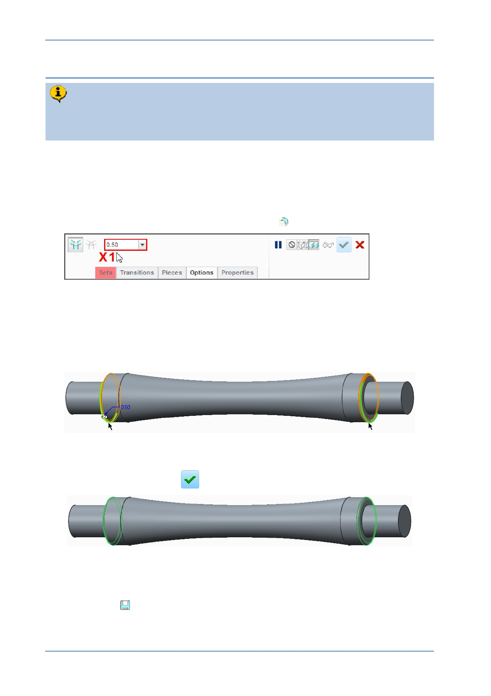

PTC Academic Program
Step 7: Round edges of the strut
Rounds are “ Engineering ” features and are applied to edges of the model. You
will add 0.5 mm radus rounds to the shoulders of the strut. This will make it
smoother for handling and help with injection molding.
1. Hiding the display of datum features.
If necessary, disable the display of all datum features and press CTRL + D to
return the model to its default orientation.
2. Starting the Round feature.
From the Engineering group, start the Round
tool.
3. Defining the radius of the round:
In the dashboard, edit radius X1 to be 0.5 and press ENTER .
4. Selecting the edges to round:
Select one of the edges shown in green .
Hold down the CTRL key and select the other edge shown in green .
Click Complete feature
to complete the round.
5. Saving your work:
If necessary, press CTRL + D to reorient the model to its default orientation.
Click Save
to save your work.
© 2012 PTC
Creo Parametric 2.0 Primer
Page 60